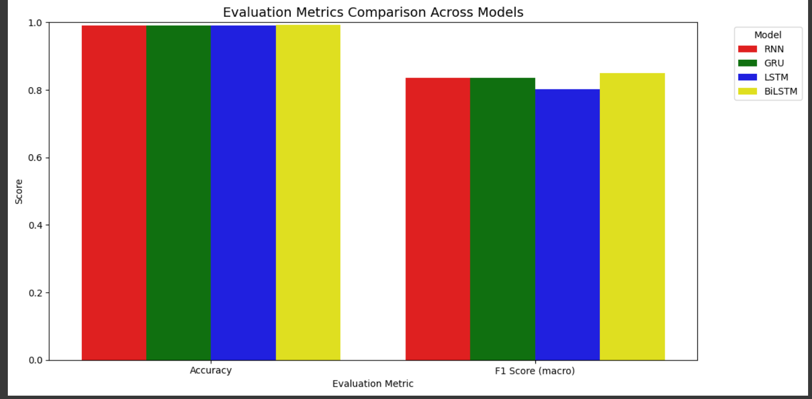
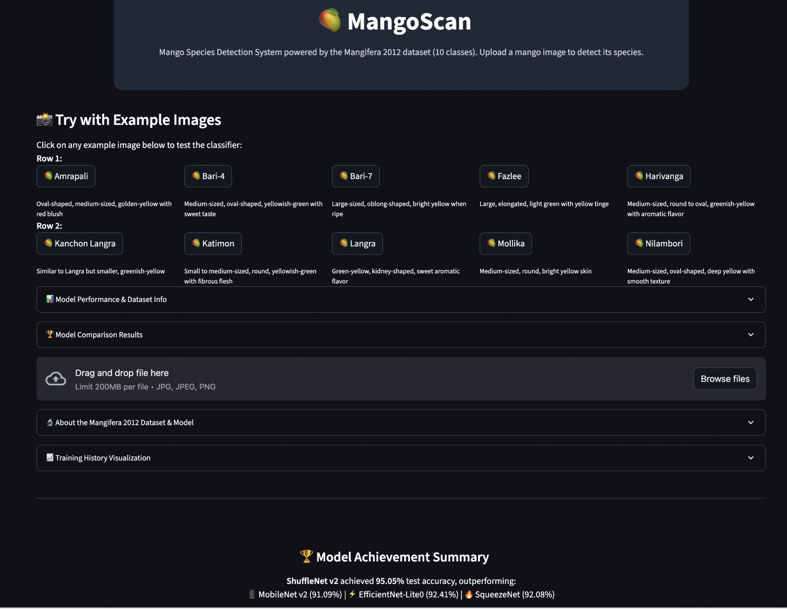
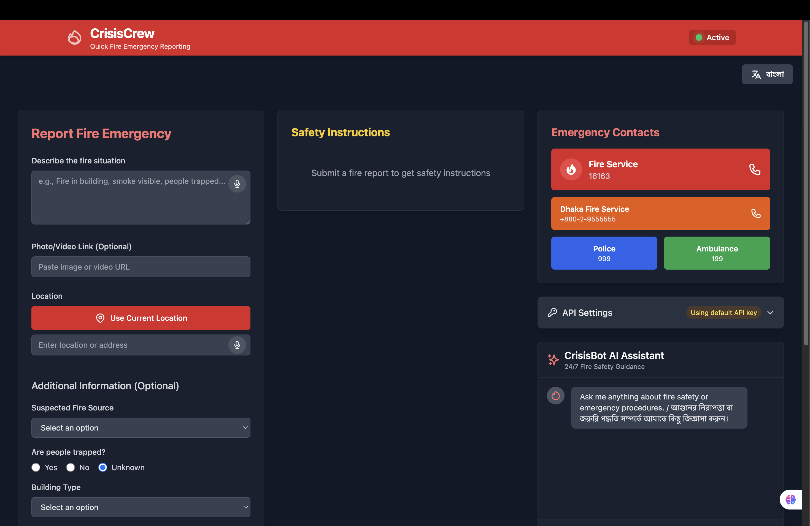
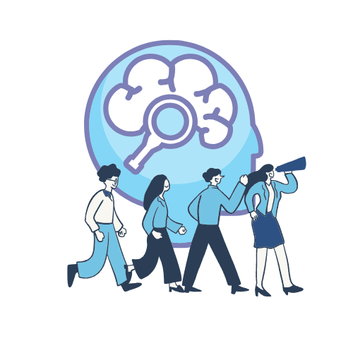
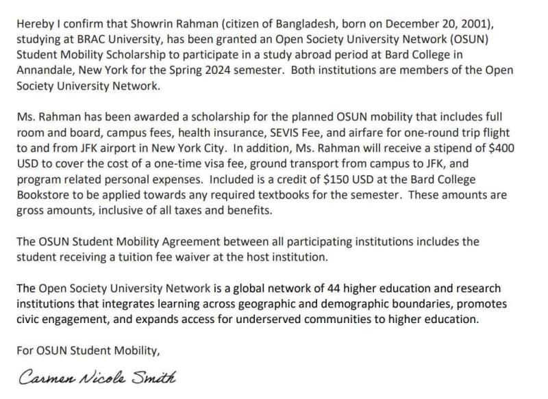
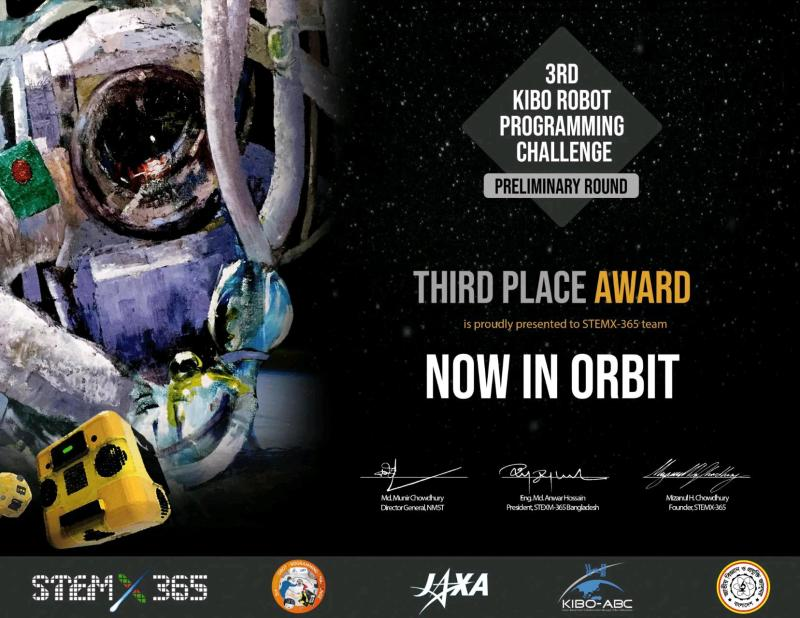
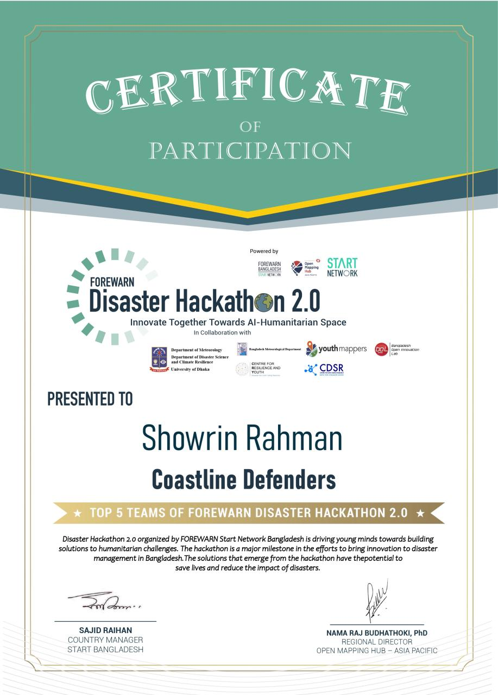
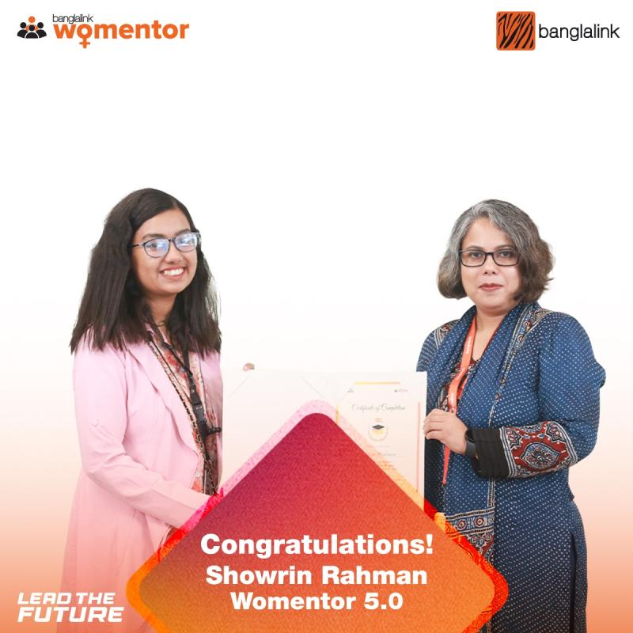
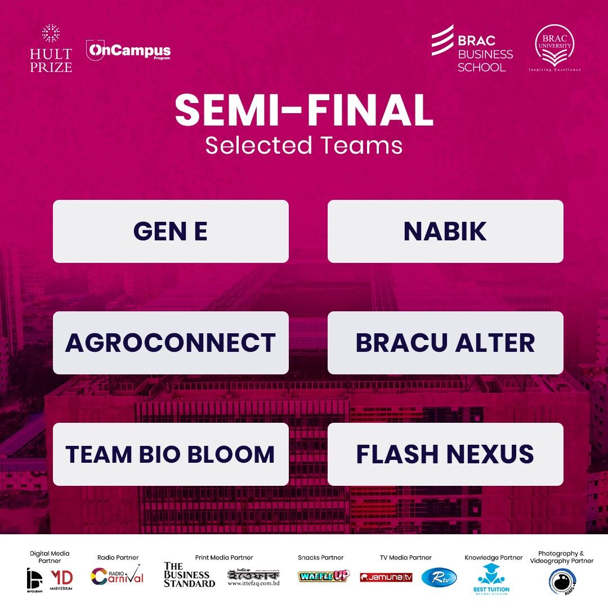
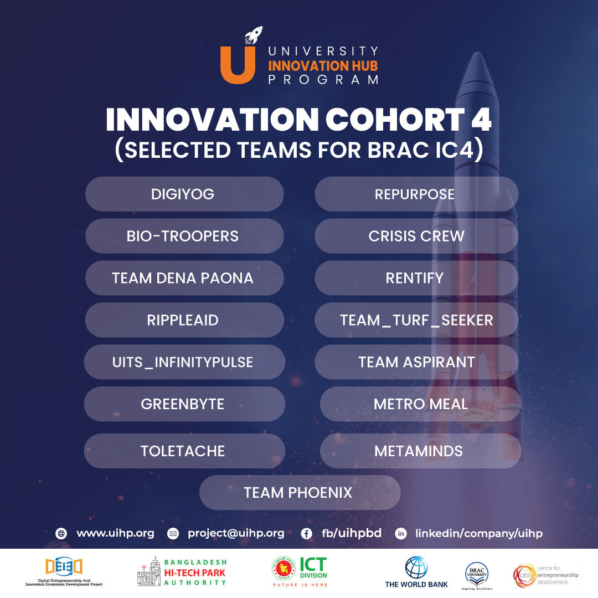

Showrin Rahman
PhD Applicant · Computer Vision · Deep Learning · GeoAI
About

I am a Computer Science graduate from BRAC University (2025, CGPA 3.62/4.00) with research focused on deep learning and computer vision methods for remote sensing and environmental monitoring. I am seeking a PhD position to develop scalable, high-precision approaches for automated environmental monitoring — using high-dimensional, multi-source geospatial data to detect environmentally significant and potentially hazardous open-water features.
My undergraduate thesis developed a self-supervised framework combining Masked Autoencoders and Mamba for semantic segmentation of Sentinel-1 SAR imagery to detect riverbank erosion. I have peer-reviewed publications at Springer IFIP AICT, IEEE ACDSA, and arXiv, and industry R&D experience in Automatic Document Recognition and Intelligent Document Processing. I also hold a fully-funded OSUN Undergraduate Mobility Scholarship to Bard College, USA.
Research Interests
Remote Sensing & Geospatial AI
Semantic segmentation of Sentinel-1 SAR and Sentinel-2 optical imagery for land-water boundary detection, riverbank erosion monitoring, and land-use change detection. Automated open-water feature extraction using multi-source geospatial data, self-supervised MAE and Mamba models, and ML classifiers in Google Earth Engine.
Deep Learning & Computer Vision
Multi-scale feature fusion and adaptive attention for spatially-varying image deblurring; applied to improving OCR and document processing pipelines. Self-supervised representation learning for label-scarce visual tasks.
Generative & Agentic AI
Segmentation-guided diffusion pipelines that decouple structure from appearance to synthesize copyright-safe training data. Agentic workflows combining LLMs with vision models for automated geospatial analysis, annotation, and decision-making pipelines.
Research Vision
My research focuses on Remote Sensing & Geospatial AI for environmental monitoring, with an emphasis on developing scalable deep learning methods for multi-source satellite imagery. I am particularly interested in Visual Representation Learning and Generative AI & Diffusion Models for addressing challenges such as limited labeled data, multi-modal fusion, and changing environmental conditions. My work explores applications including riverbank erosion, open-water detection, sea and lake ice mapping, marine monitoring, and environmental change detection. Ultimately, I aim to develop robust and practical AI methods that support climate monitoring, environmental assessment, and disaster response.
Education & Activities
BRAC University, Dhaka, Bangladesh
June 2021 – September 2025
BSc in Computer Science (CS)
CGPA: 3.62 / 4.00
Relevant Coursework:
Bard College, Annandale-On-Hudson, New York, USA
Jan 2024 – May 2024
Exchange Semester, Spring 2024
Holy Cross College, Dhaka, Bangladesh
2018 – 2020
Higher Secondary Certificate
GPA: 5.00
Co-Curricular Activities
Bracu Mongol Tori, Senior I
Feb 2022 – June 2024
- Developed an offline rover mapping system with 20% efficiency gain, worked with OpenCV and YOLO v5, and built the BRACU Mongol Tori website frontend.
Robotics Club of BRAC University — ROBU, Secretary
Nov 2022 – June 2024
- Served as a panelist in a 40-member Research and Project Management department, managed the flagship Basics of Robotics course, and developed 5+ projects using ROS, OpenCV, Arduino, and Raspberry Pi.
Publications
Masked Autoencoder and Mamba-Based Self-Supervised Segmentation of SAR Imagery for Riverbank Erosion Detection
Showrin Rahman — Undergraduate Thesis, BRAC University, 2025
Develops a self-supervised framework combining Masked Autoencoders and Mamba state-space models for semantic segmentation of Sentinel-1 SAR imagery to automate land-water boundary delineation and detect riverbank erosion — without requiring dense manual annotation. GAN-based reconstruction is used to fill temporal data gaps in the SAR time series.
Multi-Scale Feature Fusion with Adaptive Attention for Robust Image Deblurring
S. Rahman, S. H. Rahman, K. Kim, M. Jawad — IEEE EUROCON 2025, Poland
Proposes MSFAA with the CAFI attention module for spatially-varying blind deblurring. Achieves +2.1 dB PSNR, +0.043 SSIM, and 18% lower compute versus SOTA. The technique was subsequently applied in FlowPay (industry R&D) to improve OCR accuracy on degraded business documents.
TWIG: Two-Step Image Generation Using Segmentation Masks to Prevent Copyright Infringement
Showrin Rahman et al. — IFIP AICT, Springer, 2024
A two-step diffusion pipeline where segmentation masks decouple structure from texture, generating copyright-free training images without reproducing protected visual content.
Part of the book series: IFIP Advances in Information and Communication Technology (IFIPAICT, volume 705)
Conference series: IFIP International Summer School on Privacy and Identity Management
Riverbank Change Detection in the Jamuna River Basin, Bangladesh: A Remote Sensing and Machine Learning Approach
Showrin Rahman et al. — IEEE ACDSA, 2025
Integrates Sentinel-2 satellite imagery, spectral indices (NDWI, NDVI), and ML classifiers in Google Earth Engine to analyze and predict multi-temporal riverbank changes in the Jamuna basin — directly relevant to flood risk and erosion monitoring in climate-vulnerable Bangladesh.
TextDiffuser-RL: Efficient and Robust Text Layout Optimization for High-Fidelity Text-to-Image Synthesis
Showrin Rahman et al. — arXiv:2505.19291, 2025
Introduces RL-guided character-level text layout optimization for diffusion-based text-to-image models, improving glyph rendering fidelity and spatial coherence over existing baselines.
Research & ML Projects
Implementation and experimental work underlying or adjacent to publications.

FlowPay — AI Solution for Automatic Document Recognition
276 Holdings Co., Ltd. — AI & Data Division • Seoul, South Korea •
Jul 2025 – Present
Role: ML & DL Engineer, AI Researcher (Independent Researcher)
Developed OCR pipelines using EasyOCR and Tesseract for Automatic Document Recognition for FlowPay. Applied document-specific image preprocessing and MSFAA-based deblurring to improve OCR accuracy on degraded business documents. R&D area: Computer Vision and Intelligent Document Processing (IDP).
Certificate of R&D Collaboration issued Aug 2025 · 276 Holdings Co., Ltd.

Vegetation Degradation Detection via Satellite Imagery
Remote Sensing · Deep LearningCNN-based classifier on EuroSAT satellite data to identify vegetation health and degradation patterns at scale.
GitHub →
Cyclone Evacuation Optimization via Agent-Based Simulation
Multi-Agent Systems · SimulationAgent-based model simulating and optimizing evacuation routes during cyclone threats — applied AI for disaster response.
GitHub →
BiLSTM Part-of-Speech Tagger
NLP · Sequence ModelingBidirectional LSTM achieves 97% accuracy on token-level POS tagging (POS 1 dataset). Demonstrates sequence-to-sequence neural labeling.
GitHub →
MangoScan — Fine-Grained Image Classifier
Computer Vision · PyTorchFine-grained classifier for 10 Bangladeshi mango varieties using PyTorch transfer learning — 95.05% accuracy. Streamlit demo.
GitHub →
CrisisCrewBot — AI Emergency Response System
LLM Application · ReactAI-powered fire emergency data collection system for Dhaka, integrating Gemini AI and real-time Google Sheets reporting.

ThesisConnect — Academic Collaboration Platform
Full Stack · Research ToolsEcosystem for thesis management, research sharing, and scholarly communication. Built with React, Node.js, Express, MongoDB.

LLM Resource Tracker
Browser Extension · Sustainable AIPrivacy-first browser extension estimating token, energy, and water consumption of LLM sessions on-device. Supports ChatGPT, Claude, Gemini.
GitHub →Industry Experience
AI Application Developer — ACI PLC, Dhaka
Feb 2026 – Present
- Build full-stack AI applications with FastAPI and React (TypeScript).
- Integrate LLM-powered features using LangChain — RAG pipelines with vector databases.
- Docker-based deployments on Production Server; implement JWT and Google OAuth security.
Associate AI Engineer — Ontik Technology, Dhaka
Oct 2025 – Feb 2026
- Designed agentic AI workflows using n8n, CrewAI, and Google ADK.
- Deployed FastAPI microservices on GCP and AWS; containerized with Docker.
- Trained and evaluated ML models; tracked experiments via MLflow.
AI Intern — Ontik Technology, Dhaka
July 2025 – Oct 2025
- Built intelligent agent workflows with CrewAI; automation pipelines with n8n and Selenium.
- Data preprocessing and model evaluation with Pandas, NumPy, scikit-learn; CI/CD with GitHub Actions.
Coding Instructor (Part-Time) — Dreamers Academy, Dhaka
Dec 2024 – Jul 2025
- Taught HTML, CSS, Python, and JavaScript to students at Dreamers Academy (from LEAD), Dhanmondi, Dhaka.
- Part-time instructor; acknowledged for positive contributions to the growth of the organization.
Quality Assurance Analyst — Sysonex Development Limited, Dhaka
Jun 2024 – Dec 2024 · Front-end & Design Department
- Conducted QA processes for front-end and design deliverables; tracked issues and workflows with Jira and Git.
- Awarded Certificate of Completion (Dec 2024) recognizing dedication and contributions to Sysonex.
Technical Skills
Research & ML
Languages & Tools
Language Proficiency
Awards & Honors
Scholarships, competitions, and recognition

OSUN Undergraduate Mobility Scholarship
Spring 2024 · Bard College, New York, USA
Fully funded scholarship covering tuition, accommodation, living expenses, insurance, and travel — awarded on academic merit and research potential.

2nd Runner-Up — 3rd Kibo Robot Programming Challenge
2022 · Japan Aerospace Exploration Agency (JAXA)
Competed in JAXA's international robotics programming challenge using the ISS onboard computer.

Top 5 Finalist — FOREWARN Disaster Hackathon 2.0
Among 84 teams
Developed an AI-driven disaster preparedness solution and placed in the top 5 out of 84 competing teams.

Top 15 — Banglalink Womentor Program
Among 400 applicants
Selected in the top 15 out of 400 applicants for a mentorship program supporting women in technology.

University Innovation Hub Program (UIHP) Selection
BRAC IC4
CrisisCrew — our disaster preparedness initiative — was selected for UIHP as part of the BRAC IC4 innovation ecosystem.

Hult Prize Semi-Finalist — Team FLASH NEXUS
BRAC University
Team FLASH NEXUS advanced to the Semi-Final Round of the Hult Prize at BRAC University for a social entrepreneurship venture.